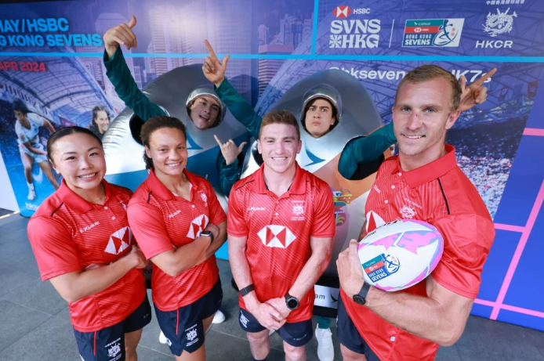

Hong Kong Sevens: men’s and women’s teams opt for experience plus some newcomers for next week’s Melrose Claymores event
For the women’s team, captain Natasha Olson-Thorne will make her 50th appearance alongside several stalwarts and debutant.
For the men, there is a surprise recall for the city’s most-capped player while Fong Kit-fung, James Sawyer will make debuts.

Among the players selected for Hong Kong for the Sevens are (from left) Nam Ka-man, Natasha Olson Thorne, Hugo Stiles and Max Woodward. Photo: May Tse
Experience alongside a sprinkling of debutants is the formula for both the women’s and men’s teams selected for next week’s Melrose Claymores competitions at the Cathay/HSBC Hong Kong Sevens.
For the women’s team, captain Natasha Olson-Thorne will be making her 50th appearance during the tournament, while the squad also includes Micayla Baltazar and her sister Chloe, alongside mainstays Nam Ka-man, Jessica Ho Wai-on and Chong Ka-yan.
Etta Kwong Tin-tung is one player who could make her debut for the squad, which was announced on Wednesday, and Gabriella Rivers is included after strong performances at the Challenger Series.
Natasha Olson-Thorne will win her 50th cap at the HK Sevens. Photo: World Rugby
“This is a really good team and the new players coming in bring good energy, and alongside our experienced players, I think it makes us a really exciting team to watch,” said Nam.
At an open training session on Tuesday, women’s head coach Andy Vilk hinted that there could be new additions to the squad for the tournament at Hong Kong Stadium.
“We’ve got 16 women in a training group now and it’s just about getting our balance right and maybe exposing some more players, especially to what Hong Kong brings and playing at home,” Vilk said.
 Hong Kong Sevens showed how rugby ‘empowers women like no other sport’, ex-USA skipper Abby Gustaitis says
Hong Kong Sevens showed how rugby ‘empowers women like no other sport’, ex-USA skipper Abby Gustaitis says